Turing Transducers
Configurations and Moves of Turing Transducers
Determinism and Nondeterminism in Turing Transducers
Computations of Turing Transducers
Turing Machines
Church's Thesis
The study of finite-memory programs and recursive finite-domain programs benefited considerably from the introduction of the mathematical systems of finite-state transducers and pushdown transducers, respectively. The usefulness of these mathematical systems stemmed from the abstraction they lend to the primitive computing machines that simulate the behavior of the programs. With this in mind it is only natural to try to follow a similar approach in studying the general class of programs.
Recursive finite-domain programs have been introduced as a generalization of finite-memory programs. In parallel, pushdown transducers have been introduced as a generalization of finite-state transducers. Going to the most general class of programs, therefore, suggests trying a similar generalization to the corresponding transducers.
Among the most general models of transducers that come to mind are probably those that allow more than one auxiliary work tape, unrestricted auxiliary work tapes, two-way input heads, inputs enclosed between endmarkers, and acceptance anywhere in the inputs. A class of such models, called Turing transducers, is introduced below.
Each Turing transducer M can be viewed as an abstract computing machine that consists of a finite-state control, an input tape, a read-only input head, m auxiliary work tapes for some m ³ 0, a read-write auxiliary work-tape head for each auxiliary work tape, an output tape, and a write-only output head (see Figure 4.1.1).
|
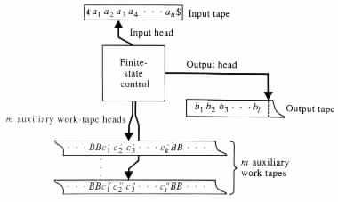
|
Each move of M is determined by the state of M, the symbol under the input head, and the symbols under the heads of the auxiliary work tapes. Each move of M consists of changing the state of M, changing the symbol under the head of each auxiliary work tape, relocating each head by at most one position in any direction, and writing at most one symbol onto the output tape.
Initially M is assumed to have its input a1 · · · an stored on the input tape between a left endmarker ¢ and a right endmarker $. In addition, the input head is assumed to be located at the start of the input, the auxiliary work tapes are assumed to contain just blank symbols B, and the output tape is assumed to be empty.
Example 4.1.1 A one auxiliary-work-tape Turing transducer M can compute the relation { (x, xrev) | x is in {a, b}* and x = xrev } by checking that each input a1 · · · an satisfies the equality a1 · · · an = an · · · a1. The computations of M can be in the following manner (see Figure 4.1.2).
|
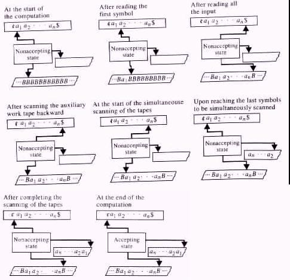
|
M starts each computation by moving forward along the input tape and the auxiliary
work tape simultaneously, one location at the time until the right endmarker $ is
encountered on the input tape. As M moves along the tapes it copies onto the auxiliary
work tape the symbols being read from the input. Then M scans the auxiliary work tape
backward, and locates the first nonblank symbol. Finally, M scans the input tape
backward, and the auxiliary work tape forward simultaneously, symbol by symbol. As M
scans the two tapes it checks for the equality of the symbols being read at each move.
Formally, a mathematical system M consisting of an eight-tuple <Q, S, G, D, d, q0, B, F> is called an m auxiliary-work-tape Turing transducer for m ³ 0 if the following conditions hold.
Example 4.1.2 M = <Q, S, G, D, d, q0, B, F> is a one auxiliary-work-tape Turing transducer if Q = {q0, q1, q2, q3, q4}, S = D = {a, b}, G = {a, b, B}, F = {q4}, and d = {(q0, a, B, q1, +1, a, +1, a), (q0, b, B, q1, +1, b, +1, b), (q0, $, B, q4, 0, B, 0, e), (q1, a, B, q1, +1, a, +1, a), (q1, b, B, q1, +1, b, +1, b), (q1, a, B, q2, 0, B, -1, e), (q1, b, B, q2, 0, B, -1, e), (q2, a, a, q2, 0, a, -1, e), (q2, b, a, q2, 0, a, -1, e), (q2, a, b, q2, 0, b, -1, e), (q2, b, b, q2, 0, b, -1, e), (q2, a, B, q3, 0, B, +1, e), (q2, b, B, q3, 0, B, +1, e), (q3, a, a, q3, +1, a, +1, e), (q3, b, b, q3, +1, b, +1, e), (q3, $, B, q4, 0, B, 0, e)}.
The Turing transducer M has five states and 16 transition rules. M uses the state q0 as
an initial state, and the state q4 as an accepting state. The symbol B is considered to be the
blank symbol of M.
A mathematical system M is called a Turing transducer if it is an m auxiliary-work-tape Turing transducer for some m ³ 0.
Each Turing transducer M = <Q, S, G, D, d, q0, B, F> can be graphically represented by a transition diagram of the following form. For each state in Q the transition diagram has a corresponding node drawn as a circle. The initial state is identified by an arrow from nowhere that points to the node. Each accepting state is identified by a double circle. Each transition rule (q, a, b1, b2, ¼, bm, p, d0, c1, d1, c2, d2, ¼, cm, dm, r) in d is represented by an edge from the node that corresponds to state q to the node that corresponds to state p, where the edge carries a label of the following form.
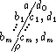
In the label the top row "a/d0" corresponds to the input tape, the bottom row "/r" corresponds to the output tape, and row "bi/ci, di" corresponds to the ith auxiliary work tape.
For notational convenience, edges that agree in their origin and destination are merged, and their labels are separated by commas.
Example 4.1.3 The transition diagram in Figure 4.1.3
|
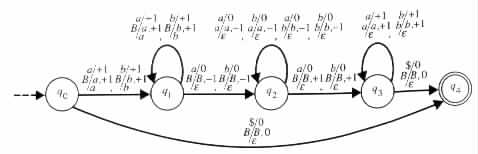
|
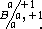
The transition rule (q1, a, B, q1, +1, a, +1, a) of M is represented in the transition
diagram by an edge that starts and ends at state q1 and carries a similar label.
Configurations and Moves of Turing Transducers
On each input x from S* the Turing transducer M has some set of possible configurations. Each configuration , or instantaneous description, of the Turing transducer M is an (m + 2)-tuple (uqv, u1qv1, ¼, umqvm, w), where q is a state of M, uv = ¢x$, uivi is a string in G* for each 1 £ i £ m, and w is a string in D*. Intuitively, we see that a configuration (uqv, u1qv1, ¼, umqvm, w) says that M is in state q, with the input head at the first symbol of v, with the ith auxiliary work tape holding · · · BuiviB · · · , with the ith auxiliary work-tape head at the first symbol of viB, and with the output tape holding w (see Figure 4.1.4).
|
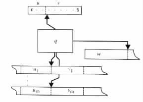
|
The configuration is said to be an initial configuration if q = q0, u = ¢, w = e, and uivi = e for each 1 £ i £ m. The initial configuration says that at the start of a computation the input is stored on the input tape, delimited by the endmarker ¢ at its left and the endmarker $ at its right. The input head is placed on the symbol to the right of ¢, that is, on the leftmost symbol of the input when the input is not empty, and on the right endmarker $ when the input is empty. The auxiliary work tapes are set to contain B's only, and the finite-state control is set at the initial state.
The configuration is said to be an accepting configuration if q is an accepting state in F.
Example 4.1.4 Let M1 be the one auxiliary-work-tape Turing transducer of Figure 4.1.3. (¢q0aabaab$, q0, e) is the initial configuration of M1 on input aabaab. On such an input M1 also has the configuration (¢aabq2aab$, aq2ab, aab). The configurations are shown in Figure 4.1.5(a)
![[PICT]](draw-pic/theory-bk-four-4-1-5.jpg)
|
Let M2 be the two auxiliary-work-tape Turing transducer of Figure 4.1.6.
|
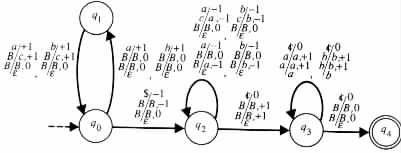
|
The transition rules of the Turing transducer M are used for defining the possible moves of M. Each move is in accordance with some transition rule. A move on transition rule (q, a, b1, b2, ¼, bm, p, d0, c1, d1, c2, d2, ¼, cm, dm, r) changes the state of the finite-state control from q to p, scans a in the input tape, moves the input head d0 positions to the right, writes r on the output tape, moves the output head |r| positions to the right, scans the symbol bi on the ith auxiliary work tape, replaces bi with the symbol ci, and moves the ith auxiliary work-tape head di positions to the right, for 1 £ i £ m.
A move of M from configuration C1 to configuration C2 is denoted C1  M C2, or
simply C1 C2 if M is understood. A sequence of zero or more moves of M from
configuration C1 to configuration C2 is denoted C1 M * C2, or simply C1 * C2, if M is
understood.
M C2, or
simply C1 C2 if M is understood. A sequence of zero or more moves of M from
configuration C1 to configuration C2 is denoted C1 M * C2, or simply C1 * C2, if M is
understood.
Example 4.1.5 The Turing transducer whose transition diagram is given in Figure 4.1.3, on input aabaab has the following sequence of moves between configurations (see Figure 4.1.7).
|
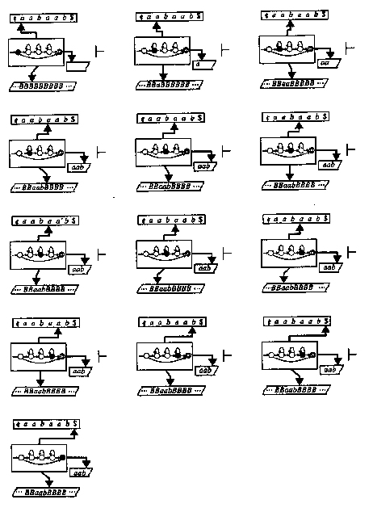
|
| (¢q0aabaab$, q0, e) | | (¢aq1abaab$, aq1, a) | ||
| | (¢aaq1baab$, aaq1, aa) | |||
| | (¢aabq1aab$, aabq1, aab) | |||
| | (¢aabq2aab$, aaq2b, aab) | |||
| | (¢aabq2aab$, aq2ab, aab) | |||
| | (¢aabq2aab$, q2aab, aab) | |||
| | (¢aabq2aab$, q2Baab, aab) | |||
| | (¢aabq3aab$, q3aab, aab) | |||
| | (¢aabaq3ab$, aq3ab, aab) | |||
| | (¢aabaaq3b$, aaq3b, aab) | |||
| | (¢aabaabq3$, aabq3, aab) | |||
| | (¢aabaabq4$, aabq4, aab). |
The sequence is the only one that can start at the initial configuration and end at an
accepting configuration for the input aabaab.
Determinism and Nondeterminism in Turing Transducers
The nature of determinism and nondeterminism in Turing transducers is similar to that in pushdown transducers and in finite-state transducers. However, defining these properties is simpler for Turing transducers, because the transition rules scan exactly one symbol in each tape at each move. In the case of the finite-state transducers and the pushdown transducers, the heads can scan zero or one symbols in each move.
Intuitively, we say that a Turing transducer is deterministic if each pair of transition rules that originate at the same state do not agree on the symbols they scan in the tapes. On the other hand, a Turing transducer is nondeterministic if it has a pair of transition rules that originate at the same state and that agree on the symbols they scan in the corresponding tapes.
Formally, a Turing transducer M = <Q, S, G, D, d, q0, B, F> is said to be deterministic if there is no pair of transition rules
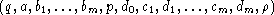
and
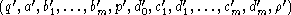
in d such that (q, a, b1, ¼, bm) = (q', a', b'1, ¼, b'm). A Turing transducer is said to be nondeterministic if it is not a deterministic Turing transducer.
Example 4.1.6 The Turing transducer of Example 4.1.2 (see Figure 4.1.3) is a nondeterministic Turing transducer. The pair of transition rules
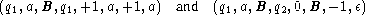
and the pair
are the cause for the nondeterminism of the Turing transducer. The first pair of transition rules agree in the prefix (q, a, B), and the second pair agree in the prefix (q, b, B).
However, the Turing transducer in Figure 4.1.6 is deterministic. None of the transition rules that originate at the same state agree in the symbols that they scan under the corresponding heads. For instance, the pair
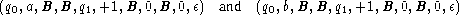
of transition rules disagree in the symbols that they scan in the input tape, and the pair
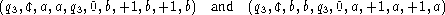
of transition rules disagree in the symbols that they scan in their auxiliary work tapes.
Computations of Turing Transducers
The definitions of computations for finite-state transducers and pushdown transducers also apply for Turing transducers. Specifically, an accepting computation of a Turing transducer M is a sequence of moves of M that starts at an initial configuration and ends at an accepting configuration. A nonaccepting , or rejecting, computation of M is a sequence of moves on an input x for which the following conditions hold.
A computation is said to be a halting computation if it consists of a finite number of moves.
Example 4.1.7 Consider the deterministic Turing transducer whose transition diagram is given in Figure 4.1.6. The Turing transducer has an accepting computation on a given input if and only if the input is of the form ww for some string w in {a, b}*. On an input of the form ww the Turing transducer writes the string w onto the output tape.
Each computation of the Turing transducer starts by reading the input. Upon reading the odd symbols from the input, it moves from state q0 to state q1, while leaving the auxiliary work tapes unchanged. Upon reading the even symbols from the input, the Turing transducer moves from state q1 to state q0, while writing c in the first auxiliary work tape.
On inputs of odd length the Turing transducer halts in state q1 when it reaches the right endmarker $. On the other hand, on inputs of even length the Turing transducer enters state q2 when it reaches the right endmarker $. On moving from state q0 to state q2 the number of c's in the second auxiliary work tape equals half of the length of the input.
In state q2, the Turing transducer reads backward an input of the form xy which satisfies |x| = |y|. As the Turing transducer reads y backward it replaces the content c|y| of the first auxiliary work tape with the string y. Then the Turing transducer reads x backward and writes it onto the second auxiliary work tape.
Upon reaching the left endmarker ¢, the Turing transducer makes a transition from state q2 to state q3. In state q3 it scans the two auxiliary work tapes to check that x = y. If the equality holds then the Turing transducer moves from state q3 to state q4. Otherwise, it halts in state q3.
The computation that the Turing transducer has on input aabaab is shown in
Figure 4.1.8.
|
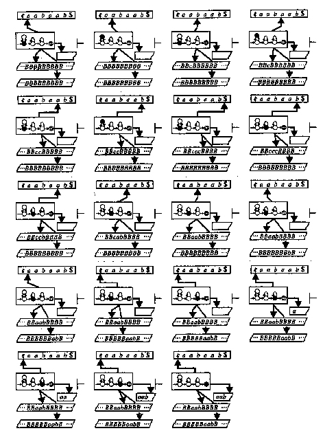
|
By definition, each move in each computation must be on a transition rule that eventually causes the computation to halt in an accepting state. Whenever more than one such transition rule is possible for a given move, any of the alternatives can be chosen. Similarly, whenever none of the feasible transition rules for a given move can lead the computation to halt in an accepting state, then again any of the feasible transition rules can be chosen.
An input x is said to be accepted , or recognized, by a Turing transducer M if M has an accepting computation on input x. An accepting computation on input x that terminates in a configuration of the form (uqv, u1qv1, ¼, umqvm, w) is said to have an output w. The output of a nonaccepting computation is assumed to be undefined.
As in the cases of finite-state transducers and pushdown transducers, a Turing transducer may have sequences of moves on inputs that are accepted that are not considered to be computations.
Example 4.1.8 Consider the nondeterministic Turing transducer whose transition diagram is given in Figure 4.1.3. The Turing transducer accepts an input if and only if it is of the form ww for some w in {a, b}*. On such an input ww it provides the output w.
Each computation of M1 on a nonempty input xy starts by reading x. As M1 reads x from the input tape it writes the string onto the auxiliary work tape. At the end of x, which is found nondeterministically, M1 switches from state q1 to state q2.
In state q2, the Turing transducer M1 moves backward across the copy of x that is stored in the auxiliary work tape until it locates the first symbol in the string. Then M1 switches to state q3.
In state q3, M1 checks that the remainder y of the input is equal to the string x stored
on the auxiliary work tape. The Turing transducer accepts the input if and only if it
determines that x = y.
Other definitions, such as the relations that Turing transducers compute, the languages accepted by them, and the languages decidable by them, are similar to those given for finite-state transducers in Section 2.2, and for pushdown transducers in Section 3.2.
Example 4.1.9
The nondeterministic Turing transducer M1, whose transition diagram is given in
Figure 4.1.3, and the deterministic Turing transducer M2, whose transition diagram is
given in Figure 4.1.6, compute the relation { (ww, w) | w is in {a, b}* }.
A language is said to be a recursively enumerable language if it is acceptable by a Turing transducer. The language is said to be recursive if it is decidable by a Turing transducer.
Turing transducers whose output components are ignored are called Turing machines. Formally, for m ³ 0 an m auxiliary-work-tape Turing machine is a seven-tuple <Q, S, G, d, q0, B, F>, where Q, S, G, q0, B, and F are defined as for Turing transducers, and d is a relation from Q × (S È {¢, $}) × Gm to Q × {-1, 0, +1} × (G × {-1, 0, +1})m. A mathematical system M is said to be a Turing machine if it is an m auxiliary-work-tape Turing machine for some m.
Transition diagrams similar to those used for representing Turing transducers can also be used to represent Turing machines. The only difference is that the labels of the edges do not contain entries for outputs.
Example 4.1.10
The Turing machine that is induced from the Turing transducer of Figure 4.1.3 is shown in
Figure 4.1.9.
|
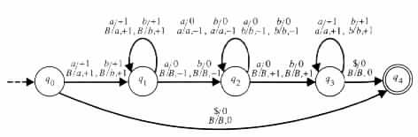
|
A Turing machine is called a linear bounded automaton or just an LBA, if for each given input x the Turing machine visits at most max(|x|, 1) locations in each of the auxiliary work tapes.
Other definitions, such as those for deterministic and nondeterministic Turing machines, their configurations, and the moves between these configurations, are similar to those given for Turing transducers.
Over the years, various characterizations have been offered to describe the concept of computability. These characterizations were derived using different approaches, including the models of deterministic Turing transducers. However, it turned out that all these characterizations are equivalent in the sense that one can effectively go from one characterization to another. The equivalency of the different characterizations suggests the following conjecture (which traditionally is stated in terms of Turing transducers).
Church's Thesis A function is computable (respectively, partially computable) if and only if it is computable (respectively, partially computable) by a deterministic Turing transducer.
One cannot expect to be able to prove the correctness of Church's thesis, because of the lack of a precise specification for the intuitive notion of computability. The best one can expect is an increase in confidence, due to the failure of finding counter examples.